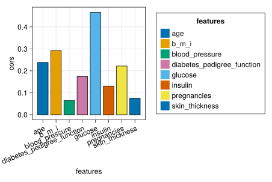
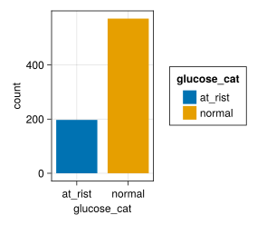

using CSV,DataFrames,Tidier,Pipe
using CairoMakie,AlgebraOfGraphics,MakieThemes
using ScientificTypes,StatsBase,RCall
#Makie.set_theme!(ggthemr(:flat))Diabetes Diagnosis Dataset
info
1. load package
2. load csv
df=CSV.File("../data/diabetes.csv")|>DataFrame
df=@chain df begin
@clean_names
end
first(df,5)5×9 DataFrame
| Row | pregnancies | glucose | blood_pressure | skin_thickness | insulin | b_m_i | diabetes_pedigree_function | age | outcome |
|---|---|---|---|---|---|---|---|---|---|
| Int64 | Int64 | Int64 | Int64 | Int64 | Float64 | Float64 | Int64 | Int64 | |
| 1 | 6 | 148 | 72 | 35 | 0 | 33.6 | 0.627 | 50 | 1 |
| 2 | 1 | 85 | 66 | 29 | 0 | 26.6 | 0.351 | 31 | 0 |
| 3 | 8 | 183 | 64 | 0 | 0 | 23.3 | 0.672 | 32 | 1 |
| 4 | 1 | 89 | 66 | 23 | 94 | 28.1 | 0.167 | 21 | 0 |
| 5 | 0 | 137 | 40 | 35 | 168 | 43.1 | 2.288 | 33 | 1 |
3. describe df
describe(df)9×7 DataFrame
| Row | variable | mean | min | median | max | nmissing | eltype |
|---|---|---|---|---|---|---|---|
| Symbol | Float64 | Real | Float64 | Real | Int64 | DataType | |
| 1 | pregnancies | 3.84505 | 0 | 3.0 | 17 | 0 | Int64 |
| 2 | glucose | 120.895 | 0 | 117.0 | 199 | 0 | Int64 |
| 3 | blood_pressure | 69.1055 | 0 | 72.0 | 122 | 0 | Int64 |
| 4 | skin_thickness | 20.5365 | 0 | 23.0 | 99 | 0 | Int64 |
| 5 | insulin | 79.7995 | 0 | 30.5 | 846 | 0 | Int64 |
| 6 | b_m_i | 31.9926 | 0.0 | 32.0 | 67.1 | 0 | Float64 |
| 7 | diabetes_pedigree_function | 0.471876 | 0.078 | 0.3725 | 2.42 | 0 | Float64 |
| 8 | age | 33.2409 | 21 | 29.0 | 81 | 0 | Int64 |
| 9 | outcome | 0.348958 | 0 | 0.0 | 1 | 0 | Int64 |
4. EDA
4.1 cor of eachcol
df41=@chain df begin
@select(1:8)
end
outcome=df.outcome
cors=[cor(col, outcome) for col in eachcol(df41)]
features=names(df41)8-element Vector{String}:
"pregnancies"
"glucose"
"blood_pressure"
"skin_thickness"
"insulin"
"b_m_i"
"diabetes_pedigree_function"
"age"ax=(width=250,height=250,xticklabelrotation = pi/8)
datalayer=data(DataFrame(cors=cors,features=features))
maplayer=mapping(:features,:cors,color=:features)
vislayer=visual(BarPlot,strokewidth=1,strokecolor=:black)
plt=datalayer*maplayer*vislayer
draw(plt;axis=ax)
4.2 Feature Engineering
new_df=@chain df begin
@mutate(age_cat = case_when(age<21 => "young",
age>50 => "elder",
true => "mature"
))
@mutate(glucose_cat=case_when(
glucose>=140=>"at_rist",
true=>"normal"
))
@mutate(age_gul_cat=case_when((glucose<140) & (age<=50) => "normal_mature",
(glucose<140) & (age>50) => "normal_elder",
(glucose>140) & (age<50) => "at_risk_mature",
true=>"at_risk_elder"
))
@mutate(age_insul_level=case_when(
(insulin<126) & (age<=50) => "is_normal_mature",
(insulin<126) & (age>50) => "is_normal_elder",
(insulin>=126) & (age<=50) => "not_normal_mature",
(insulin>=126) & (age>50) => "not_normal_elder",
))
@mutate(insulin_level=case_when(insulin<126 =>"is_normal",
insulin>=126 =>"not_normal"
))
@mutate(gulcose_insulin=glucose*insulin)
end768×15 DataFrame
743 rows omitted
| Row | pregnancies | glucose | blood_pressure | skin_thickness | insulin | b_m_i | diabetes_pedigree_function | age | outcome | age_cat | glucose_cat | age_gul_cat | age_insul_level | insulin_level | gulcose_insulin |
|---|---|---|---|---|---|---|---|---|---|---|---|---|---|---|---|
| Int64 | Int64 | Int64 | Int64 | Int64 | Float64 | Float64 | Int64 | Int64 | String | String | String | String | String | Int64 | |
| 1 | 6 | 148 | 72 | 35 | 0 | 33.6 | 0.627 | 50 | 1 | mature | at_rist | at_risk_elder | is_normal_mature | is_normal | 0 |
| 2 | 1 | 85 | 66 | 29 | 0 | 26.6 | 0.351 | 31 | 0 | mature | normal | normal_mature | is_normal_mature | is_normal | 0 |
| 3 | 8 | 183 | 64 | 0 | 0 | 23.3 | 0.672 | 32 | 1 | mature | at_rist | at_risk_mature | is_normal_mature | is_normal | 0 |
| 4 | 1 | 89 | 66 | 23 | 94 | 28.1 | 0.167 | 21 | 0 | mature | normal | normal_mature | is_normal_mature | is_normal | 8366 |
| 5 | 0 | 137 | 40 | 35 | 168 | 43.1 | 2.288 | 33 | 1 | mature | normal | normal_mature | not_normal_mature | not_normal | 23016 |
| 6 | 5 | 116 | 74 | 0 | 0 | 25.6 | 0.201 | 30 | 0 | mature | normal | normal_mature | is_normal_mature | is_normal | 0 |
| 7 | 3 | 78 | 50 | 32 | 88 | 31.0 | 0.248 | 26 | 1 | mature | normal | normal_mature | is_normal_mature | is_normal | 6864 |
| 8 | 10 | 115 | 0 | 0 | 0 | 35.3 | 0.134 | 29 | 0 | mature | normal | normal_mature | is_normal_mature | is_normal | 0 |
| 9 | 2 | 197 | 70 | 45 | 543 | 30.5 | 0.158 | 53 | 1 | elder | at_rist | at_risk_elder | not_normal_elder | not_normal | 106971 |
| 10 | 8 | 125 | 96 | 0 | 0 | 0.0 | 0.232 | 54 | 1 | elder | normal | normal_elder | is_normal_elder | is_normal | 0 |
| 11 | 4 | 110 | 92 | 0 | 0 | 37.6 | 0.191 | 30 | 0 | mature | normal | normal_mature | is_normal_mature | is_normal | 0 |
| 12 | 10 | 168 | 74 | 0 | 0 | 38.0 | 0.537 | 34 | 1 | mature | at_rist | at_risk_mature | is_normal_mature | is_normal | 0 |
| 13 | 10 | 139 | 80 | 0 | 0 | 27.1 | 1.441 | 57 | 0 | elder | normal | normal_elder | is_normal_elder | is_normal | 0 |
| ⋮ | ⋮ | ⋮ | ⋮ | ⋮ | ⋮ | ⋮ | ⋮ | ⋮ | ⋮ | ⋮ | ⋮ | ⋮ | ⋮ | ⋮ | ⋮ |
| 757 | 7 | 137 | 90 | 41 | 0 | 32.0 | 0.391 | 39 | 0 | mature | normal | normal_mature | is_normal_mature | is_normal | 0 |
| 758 | 0 | 123 | 72 | 0 | 0 | 36.3 | 0.258 | 52 | 1 | elder | normal | normal_elder | is_normal_elder | is_normal | 0 |
| 759 | 1 | 106 | 76 | 0 | 0 | 37.5 | 0.197 | 26 | 0 | mature | normal | normal_mature | is_normal_mature | is_normal | 0 |
| 760 | 6 | 190 | 92 | 0 | 0 | 35.5 | 0.278 | 66 | 1 | elder | at_rist | at_risk_elder | is_normal_elder | is_normal | 0 |
| 761 | 2 | 88 | 58 | 26 | 16 | 28.4 | 0.766 | 22 | 0 | mature | normal | normal_mature | is_normal_mature | is_normal | 1408 |
| 762 | 9 | 170 | 74 | 31 | 0 | 44.0 | 0.403 | 43 | 1 | mature | at_rist | at_risk_mature | is_normal_mature | is_normal | 0 |
| 763 | 9 | 89 | 62 | 0 | 0 | 22.5 | 0.142 | 33 | 0 | mature | normal | normal_mature | is_normal_mature | is_normal | 0 |
| 764 | 10 | 101 | 76 | 48 | 180 | 32.9 | 0.171 | 63 | 0 | elder | normal | normal_elder | not_normal_elder | not_normal | 18180 |
| 765 | 2 | 122 | 70 | 27 | 0 | 36.8 | 0.34 | 27 | 0 | mature | normal | normal_mature | is_normal_mature | is_normal | 0 |
| 766 | 5 | 121 | 72 | 23 | 112 | 26.2 | 0.245 | 30 | 0 | mature | normal | normal_mature | is_normal_mature | is_normal | 13552 |
| 767 | 1 | 126 | 60 | 0 | 0 | 30.1 | 0.349 | 47 | 1 | mature | normal | normal_mature | is_normal_mature | is_normal | 0 |
| 768 | 1 | 93 | 70 | 31 | 0 | 30.4 | 0.315 | 23 | 0 | mature | normal | normal_mature | is_normal_mature | is_normal | 0 |
datalayer=data(new_df)
maplayer=mapping(:glucose_cat)*frequency()*mapping(color=:glucose_cat)
draw(datalayer*maplayer)